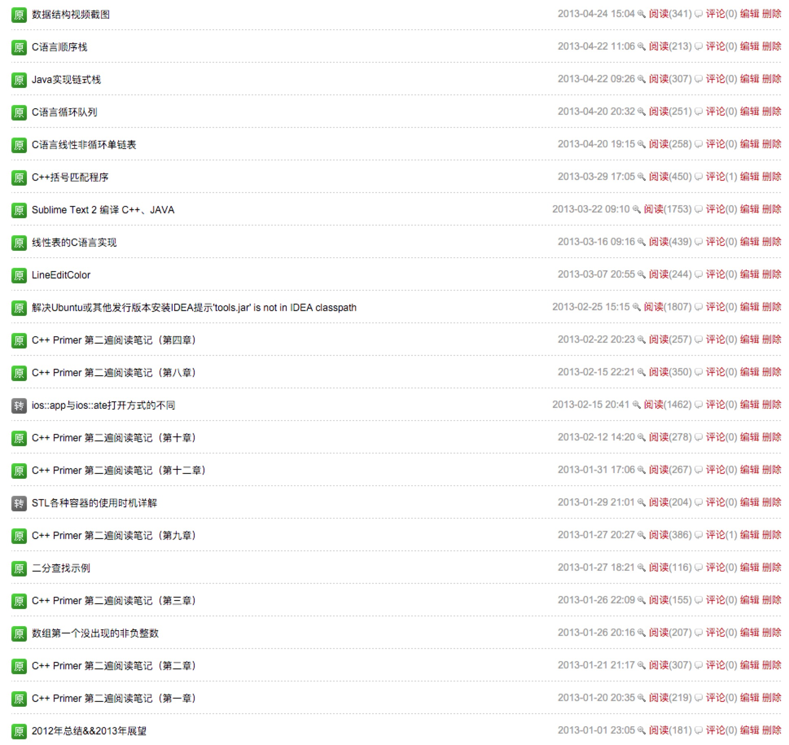

今天有同事说自己的CSDN博客被盗了，我才隐约想起我以前好像也在CSDN写过东西。找了好久才找到当年的博客，都是那时候学C++时候的笔记，如果我到现在还在坚持用C++的话，也许也已经能和「轮子哥」谈笑风生了吧。

C++让我懂了很多直接学习动态语言和其他高级语言（比如Java，我并没有黑Java）所接触不到的和更底层的东西，比如指针、内存动态分配、构造函数和析构函数的作用等等。
那时候还亲自动手写过各种数据结构和算法的C++实现，也走过很多很多的弯路。
翻到这个东西还能证明一点，我已经符合至少三年开发经验的要求了😂
还有，不要报有在达X培训3个月就能成大牛的想法，我都鼓捣快四年了也才刚刚入门。。。